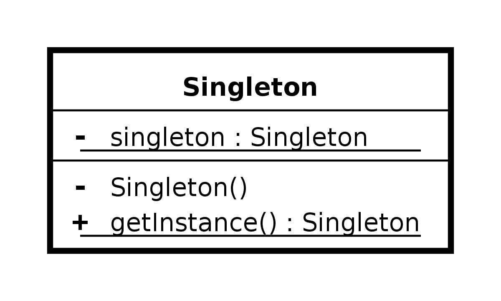
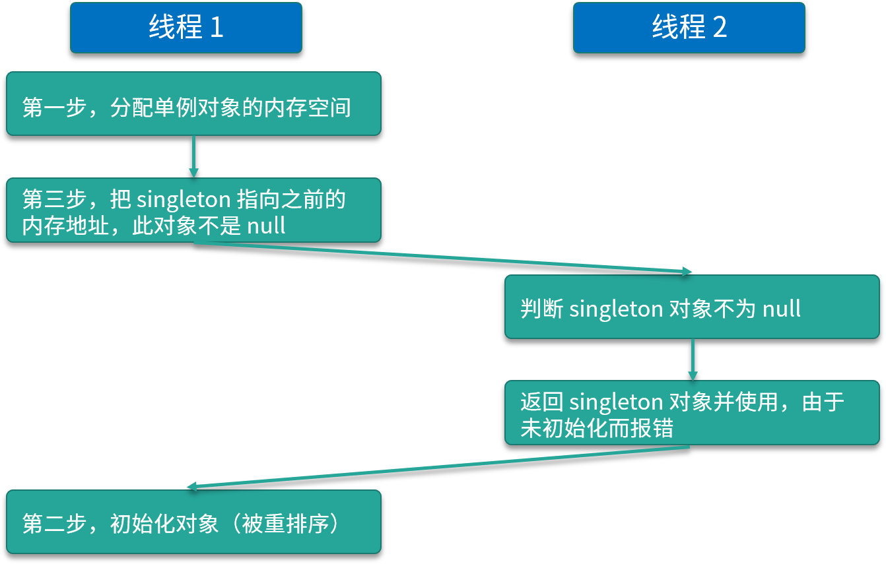

- 00 由点及面，搭建你的 Java 并发知识网.md
- 01 为何说只有 1 种实现线程的方法？.md
- 02 如何正确停止线程？为什么 volatile 标记位的停止方法是错误的？.md
- 03 线程是如何在 6 种状态之间转换的？.md
- 04 waitnotifynotifyAll 方法的使用注意事项？.md
- 05 有哪几种实现生产者消费者模式的方法？.md
- 06 一共有哪 3 类线程安全问题？.md
- 07 哪些场景需要额外注意线程安全问题？.md
- 08 为什么多线程会带来性能问题？.md
- 09 使用线程池比手动创建线程好在哪里？.md
- 10 线程池的各个参数的含义？.md
- 11 线程池有哪 4 种拒绝策略？.md
- 12 有哪 6 种常见的线程池？什么是 Java8 的 ForkJoinPool？.md
- 13 线程池常用的阻塞队列有哪些？.md
- 14 为什么不应该自动创建线程池？.md
- 15 合适的线程数量是多少？CPU 核心数和线程数的关系？.md
- 16 如何根据实际需要，定制自己的线程池？.md
- 17 如何正确关闭线程池？shutdown 和 shutdownNow 的区别？.md
- 18 线程池实现“线程复用”的原理？.md
- 19 你知道哪几种锁？分别有什么特点？.md
- 20 悲观锁和乐观锁的本质是什么？.md
- 21 如何看到 synchronized 背后的“monitor 锁”？.md
- 22 synchronized 和 Lock 孰优孰劣，如何选择？.md
- 23 Lock 有哪几个常用方法？分别有什么用？.md
- 24 讲一讲公平锁和非公平锁，为什么要“非公平”？.md
- 25 读写锁 ReadWriteLock 获取锁有哪些规则？.md
- 26 读锁应该插队吗？什么是读写锁的升降级？.md
- 27 什么是自旋锁？自旋的好处和后果是什么呢？.md
- 28 JVM 对锁进行了哪些优化？.md
- 29 HashMap 为什么是线程不安全的？.md
- 30 ConcurrentHashMap 在 Java7 和 8 有何不同？.md
- 31 为什么 Map 桶中超过 8 个才转为红黑树？.md
- 32 同样是线程安全，ConcurrentHashMap 和 Hashtable 的区别.md
- 33 CopyOnWriteArrayList 有什么特点？.md
- 34 什么是阻塞队列？.md
- 35 阻塞队列包含哪些常用的方法？add、offer、put 等方法的区别？.md
- 36 有哪几种常见的阻塞队列？.md
- 37 阻塞和非阻塞队列的并发安全原理是什么？.md
- 38 如何选择适合自己的阻塞队列？.md
- 39 原子类是如何利用 CAS 保证线程安全的？.md
- 40 AtomicInteger 在高并发下性能不好，如何解决？为什么？.md
- 41 原子类和 volatile 有什么异同？.md
- 42 AtomicInteger 和 synchronized 的异同点？.md
- 43 Java 8 中 Adder 和 Accumulator 有什么区别？.md
- 44 ThreadLocal 适合用在哪些实际生产的场景中？.md
- 45 ThreadLocal 是用来解决共享资源的多线程访问的问题吗？.md
- 46 多个 ThreadLocal 在 Thread 中的 threadlocals 里是怎么存储的？.md
- 47 内存泄漏——为何每次用完 ThreadLocal 都要调用 remove()？.md
- 48 Callable 和 Runnable 的不同？.md
- 49 Future 的主要功能是什么？.md
- 50 使用 Future 有哪些注意点？Future 产生新的线程了吗？.md
- 51 如何利用 CompletableFuture 实现“旅游平台”问题？.md
- 52 信号量能被 FixedThreadPool 替代吗？.md
- 53 CountDownLatch 是如何安排线程执行顺序的？.md
- 54 CyclicBarrier 和 CountdownLatch 有什么异同？.md
- 55 Condition、object.wait() 和 notify() 的关系？.md
- 56 讲一讲什么是 Java 内存模型？.md
- 57 什么是指令重排序？为什么要重排序？.md
- 58 Java 中的原子操作有哪些注意事项？.md
- 59 什么是“内存可见性”问题？.md
- 60 主内存和工作内存的关系？.md
- 61 什么是 happens-before 规则？.md
- 62 volatile 的作用是什么？与 synchronized 有什么异同？.md
- 63 单例模式的双重检查锁模式为什么必须加 volatile？.md
- 64 你知道什么是 CAS 吗？.md
- 65 CAS 和乐观锁的关系，什么时候会用到 CAS？.md
- 66 CAS 有什么缺点？.md
- 67 如何写一个必然死锁的例子？.md
- 68 发生死锁必须满足哪 4 个条件？.md
- 69 如何用命令行和代码定位死锁？.md
- 70 有哪些解决死锁问题的策略？.md
- 71 讲一讲经典的哲学家就餐问题.md
- 72 final 的三种用法是什么？.md
- 73 为什么加了 final 却依然无法拥有“不变性”？.md
- 74 为什么 String 被设计为是不可变的？.md
- 75 为什么需要 AQS？AQS 的作用和重要性是什么？.md
- 76 AQS 的内部原理是什么样的？.md
- 77 AQS 在 CountDownLatch 等类中的应用原理是什么？.md
- 78 一份独家的 Java 并发工具图谱.md
63 单例模式的双重检查锁模式为什么必须加 volatile？
本课时我们主要讲解单例模式的双重检查锁模式为什么必须加 volatile？
什么是单例模式
单例模式指的是，保证一个类只有一个实例，并且提供一个可以全局访问的入口。
为什么需要使用单例模式
那么我们为什么需要单例呢？其中一个理由，那就是为了节省内存、节省计算。因为在很多情况下，我们只需要一个实例就够了，如果出现更多的实例，反而纯属浪费。
下面我们举一个例子来说明这个情况，以一个初始化比较耗时的类来说，代码如下所示：
public class ExpensiveResource {
public ExpensiveResource() {
field1 = // 查询数据库
field2 = // 然后对查到的数据做大量计算
field3 = // 加密、压缩等耗时操作
}
}
这个类在构造的时候，需要查询数据库并对查到的数据做大量计算，所以在第一次构造时，我们花了很多时间来初始化这个对象。但是假设数据库里的数据是不变的，我们就可以把这个对象保存在内存中，那么以后开发的时候就可以直接用这同一个实例了，不需要再次构建新实例。如果每次都重新生成新的实例，则会造成更多的浪费，实在没有必要。
接下来看看需要单例的第二个理由，那就是为了保证结果的正确。**比如我们需要一个全局的计数器，用来统计人数，如果有多个实例，反而会造成混乱。
另外呢，就是为了方便管理。**很多工具类，我们只需要一个实例，那么我们通过统一的入口，比如通过 getInstance 方法去获取这个单例是很方便的，太多实例不但没有帮助，反而会让人眼花缭乱。
一般单例模式的类结构如下图所示：有一个私有的 Singleton 类型的 singleton 对象；同时构造方法也是私有的，为了防止他人调用构造函数来生成实例；另外还会有一个 public 的 getInstance 方法，可通过这个方法获取到单例。

双重检查锁模式的写法
单例模式有多种写法，我们重点介绍一下和 volatile 强相关的双重检查锁模式的写法，代码如下所示：
public class Singleton {
private static volatile Singleton singleton;
private Singleton() {
}
public static Singleton getInstance() {
if (singleton == null) {
synchronized (Singleton.class) {
if (singleton == null) {
singleton = new Singleton();
}
}
}
return singleton;
}
}
在这里我将重点讲解 getInstance 方法，方法中首先进行了一次 if (singleton == null) 的检查，然后是 synchronized 同步块，然后又是一次 if (singleton == null) 的检查，最后是 singleton = new Singleton() 来生成实例。
我们进行了两次 if (singleton == null) 检查，这就是“双重检查锁”这个名字的由来。这种写法是可以保证线程安全的，假设有两个线程同时到达 synchronized 语句块，那么实例化代码只会由其中先抢到锁的线程执行一次，而后抢到锁的线程会在第二个 if 判断中发现 singleton 不为 null，所以跳过创建实例的语句。再后面的其他线程再来调用 getInstance 方法时，只需判断第一次的 if (singleton == null) ，然后会跳过整个 if 块，直接 return 实例化后的对象。
这种写法的优点是不仅线程安全，而且延迟加载、效率也更高。
讲到这里就涉及到了一个常见的问题，面试官可能会问你，“为什么要 double-check？去掉任何一次的 check 行不行？”
我们先来看第二次的 check，这时你需要考虑这样一种情况，有两个线程同时调用 getInstance 方法，由于 singleton 是空的 ，因此两个线程都可以通过第一重的 if 判断；然后由于锁机制的存在，会有一个线程先进入同步语句，并进入第二重 if 判断 ，而另外的一个线程就会在外面等待。
不过，当第一个线程执行完 new Singleton() 语句后，就会退出 synchronized 保护的区域，这时如果没有第二重 if (singleton == null) 判断的话，那么第二个线程也会创建一个实例，此时就破坏了单例，这肯定是不行的。
而对于第一个 check 而言，如果去掉它，那么所有线程都会串行执行，效率低下，所以两个 check 都是需要保留的。
在双重检查锁模式中为什么需要使用 volatile 关键字
相信细心的你可能看到了，我们在双重检查锁模式中，给 singleton 这个对象加了 volatile 关键字，那为什么要用 volatile 呢？主要就在于 singleton = new Singleton() ，它并非是一个原子操作，事实上，在 JVM 中上述语句至少做了以下这 3 件事：
- 第一步是给 singleton 分配内存空间；
- 然后第二步开始调用 Singleton 的构造函数等，来初始化 singleton；
- 最后第三步，将 singleton 对象指向分配的内存空间（执行完这步 singleton 就不是 null 了）。
这里需要留意一下 1-2-3 的顺序，因为存在指令重排序的优化，也就是说第2 步和第 3 步的顺序是不能保证的，最终的执行顺序，可能是 1-2-3，也有可能是 1-3-2。
如果是 1-3-2，那么在第 3 步执行完以后，singleton 就不是 null 了，可是这时第 2 步并没有执行，singleton 对象未完成初始化，它的属性的值可能不是我们所预期的值。假设此时线程 2 进入 getInstance 方法，由于 singleton 已经不是 null 了，所以会通过第一重检查并直接返回，但其实这时的 singleton 并没有完成初始化，所以使用这个实例的时候会报错，详细流程如下图所示：

线程 1 首先执行新建实例的第一步，也就是分配单例对象的内存空间，由于线程 1 被重排序，所以执行了新建实例的第三步，也就是把 singleton 指向之前分配出来的内存地址，在这第三步执行之后，singleton 对象便不再是 null。
这时线程 2 进入 getInstance 方法，判断 singleton 对象不是 null，紧接着线程 2 就返回 singleton 对象并使用，由于没有初始化，所以报错了。最后，线程 1 “姗姗来迟”，才开始执行新建实例的第二步——初始化对象，可是这时的初始化已经晚了，因为前面已经报错了。
使用了 volatile 之后，相当于是表明了该字段的更新可能是在其他线程中发生的，因此应确保在读取另一个线程写入的值时，可以顺利执行接下来所需的操作。在 JDK 5 以及后续版本所使用的 JMM 中，在使用了 volatile 后，会一定程度禁止相关语句的重排序，从而避免了上述由于重排序所导致的读取到不完整对象的问题的发生。
到这里关于“为什么要用 volatile” 的问题就讲完了，使用 volatile 的意义主要在于它可以防止避免拿到没完成初始化的对象，从而保证了线程安全。
总结
在本课时中我们首先介绍了什么是单例模式，以及为什么需要使用单例模式，然后介绍了双重检查锁模式这种写法，以及面对这种写法时为什么需要 double-check，为什么需要用 volatile？最主要的是为了保证线程安全。
© 2019 - 2023 Liangliang Lee. Powered by gin and hexo-theme-book.